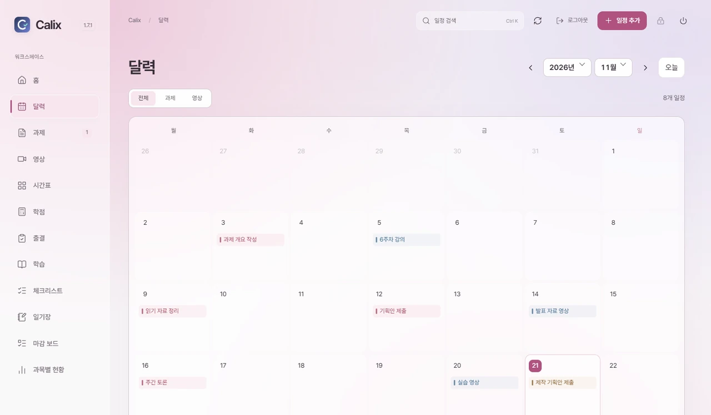
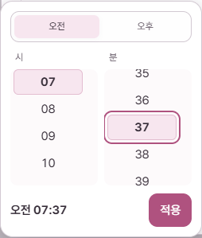
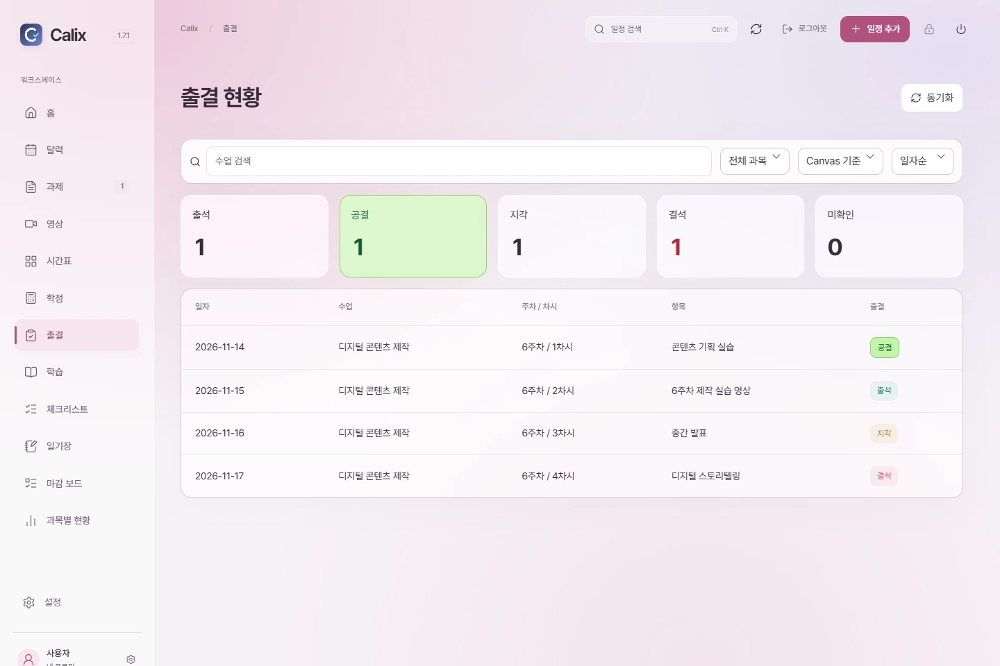
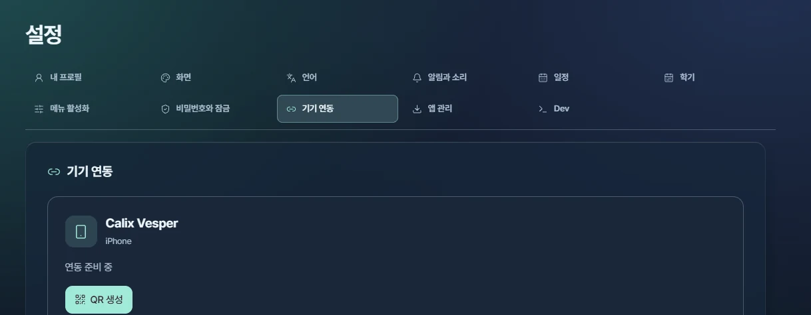

Windows 1.7.8
사용 설명서
설치, Canvas 동기화, 일정 관리
설치
- Windows 설치 파일을 실행합니다.
- 이전 버전이 있으면 설치 화면에서 데이터 유지, 새로 설치, 이전 버전 보관 중 하나를 선택합니다.
- 첫 실행에서 닉네임과 테마를 지정합니다.
로그인과 동기화
- 상단에서 로그인을 누릅니다.
- 학교 계정으로 로그인한 뒤 로그인 완료를 누르면 자동으로 동기화합니다.
- 일정을 갱신하거나 진행 중인 동기화를 중단하려면 상단의 동기화 버튼을 누릅니다.
달력과 일정

- 일정 추가에서 개인 일정을 등록합니다.
- 상단 필터에서 전체, 과제, 영상을 선택합니다.
- 일정을 누르면 이름, 유형, 메모를 편집하거나 체크리스트에 추가할 수 있습니다.
- 달력 우측 상단의 연도 또는 월을 눌러 원하는 달로 이동합니다.
과제와 영상
사이드바의 과제, 영상에서는 전체, 미완료, 완료, 기한 경과로 나누거나 강의별로 묶어 볼 수 있습니다. 기한 경과에는 마감이 지난 미완료 항목을 표시합니다.
마감 보드
미완료 일정을 기한순으로 확인합니다. 학습 계획에서는 오늘 공부할 시간과 항목당 예상 시간을 지정합니다.
체크리스트
- 개별 일정은 달력의 상세 창에서 체크리스트에 추가를 선택합니다. 여러 건은 체크리스트의 일괄 가져오기를 사용합니다.
- 기한은 해당 칸의 달력에서 날짜와 시각을 선택합니다. 분류, 역할, 교수, 상태, 비고도 각 칸에서 수정합니다. 열 제목을 눌러 정렬하고, 제목 오른쪽 경계를 끌어 열 너비를 바꿉니다.
- 직접 만든 할 일은 행 오른쪽의 삭제 아이콘으로 삭제합니다.
시간표
학기 설정
홈의 메인 학기에서 학기를 고르고 변경을 누릅니다. 이후 시작한 동기화에서 새 Canvas 과목은 선택한 학기에 추가됩니다.
설정 → 학기에서 학기를 추가하거나 기존 Canvas 과목을 다른 학기로 옮깁니다.
수업 편집
편집 모드에서 Canvas 과목을 연결하거나 수업을 직접 입력합니다. 수업명, 교수명, 강의실, 색상을 바꿀 수 있습니다.
같은 수업을 여러 요일에 배치하려면 시간 추가를 누릅니다. 비대면 수업은 시간표 하단에 표시됩니다.
시계 버튼으로 시간을 고릅니다. 시간 칸에 오후 2:30을 입력하고 Tab을 누르면 다음 칸으로 이동합니다. 오후만 입력하면 시와 분을 유지합니다.

수업 열람
열람 모드에서 수업을 누르면 교수명, 시간, 강의실과 과제, 영상 목록을 확인할 수 있습니다. 미완료, 전체, 완료로 필터링할 수 있습니다.
시간표가 좁으면 상단의 시간 간격을 조정합니다.
오른쪽 상단의 색상 자동 설정은 앱 테마에 맞춰 수업 색을 지정합니다. 시간표 색상에서 색 조합과 이름을 저장하거나 수업별 색상으로 돌아갈 수 있습니다.
출결과 제출 내역
설정 → 메뉴 활성화에서 메뉴 표시와 출결 동기화를 켠 뒤 동기화합니다.

- 조회할 과목을 선택합니다.
- Canvas 기준이 기본입니다. 수업별, 활동별 보기로 전환할 수 있습니다.
- 일자, 주차, 차시순으로 정렬합니다.
- 공결은 초록색으로 표시됩니다.
과제 평가
과제 목록에서 미제출, 제출 완료, 지각 제출, 채점 완료를 확인합니다. 교수 코멘트는 제출한 과제의 상세 창에서 확인할 수 있습니다.
학점 계산과 학습
학점 메뉴는 비밀번호 설정 후 열립니다. Canvas에서 수집한 과목이 학기에 자동으로 추가됩니다. 빠진 과목은 과목 일괄 가져오기에서 선택합니다.
과목별 학점과 성적을 입력하고 전체 저장을 누릅니다. 입력한 기록은 학기 초기화 또는 전체 초기화로 지울 수 있습니다.
집중 모드와 학습 통계
학습에서 주간 수강률, 제출률, 집중 시간을 확인합니다. 뽀모도로 또는 자유 집중을 시작하면 우측 하단에 타이머가 표시됩니다. 집중 문구는 타이머 카드의 설정에서 바꿀 수 있습니다.
Anki
같은 PC에서 AnkiConnect를 설치한 Anki를 실행합니다. Calix의 설정 → 앱 관리 → Anki 동기화를 켜면 학습에 덱별 카드 수가 표시됩니다.
같은 PC에서 ANV 2.1을 실행하면 학습 → ANV에서 연결 상태와 최근 동기화 시간을 확인할 수 있습니다.
알림과 소리
설정 → 알림과 소리에서 실행 시, 동기화 후, 일반 및 긴급 마감 알림을 지정합니다. 과제와 영상은 따로 선택할 수 있습니다.
긴급 마감의 알림 기준은 분 또는 시간으로 설정합니다. 긴급 알림에는 가장 가까운 마감까지 남은 시간이 표시됩니다.
알림음
소리 탭에서 일반 마감 알람, 동기화 완료음, 음량을 조정합니다. 동기화 기본음은 Notification 1입니다. 소리를 꺼도 알림 조건에 맞으면 창이 표시됩니다.
비밀번호와 잠금
설정 → 비밀번호와 잠금에서 숫자 4자리 PIN, 숫자 6자리 PIN, 6자 이상 비밀번호 중 하나를 선택합니다. 업데이트 후 첫 실행에서 기존 비밀번호를 입력하고 새 잠금 방식을 저장합니다. PIN으로 만든 백업은 같은 Windows 계정에서 열 수 있습니다.
잠금 화면에서는 비밀번호 입력 없이 종료할 수 있습니다.
일기장
일반 일기와 비밀 일기를 작성할 수 있습니다. 비밀 일기의 비밀번호를 잊으면 일기를 복구할 수 없습니다.
프로필
프로필 설정에서 사진과 닉네임, 홈 문구를 바꿉니다. 홈 문구의 {닉네임}은 실제 닉네임으로 표시됩니다.
설정 → 언어에서 한국어, English, 日本語를 선택합니다.
설정 → 화면에서 Aurora 테마 3종과 Pre-Aurora 테마를 고릅니다.
화면 전환 효과는 설정 → 화면 → 모션 줄이기에서 줄일 수 있습니다.
Vesper 기기 연동

- 설정 → 기기 연동을 엽니다.
- QR 생성으로 준비용 코드를 표시합니다. QR은 5분 후 닫힙니다.
Vesper의 기기 등록과 데이터 동기화는 준비 중입니다.
백업과 업데이트
- 실행할 때 새 버전을 확인합니다. 설정 → 앱 관리에서도 업데이트를 확인하고 백업을 내보내거나 복원할 수 있습니다.
- 데이터 초기화는 저장한 자료와 로그인 정보를 삭제합니다. 잠금 화면에서 초기화할 때는 확인란에 초기화를 입력합니다.
단축키
- 일정 검색
- Ctrl + K
- 잠금
- Ctrl + L
- 학점 전체 저장
- Ctrl + S